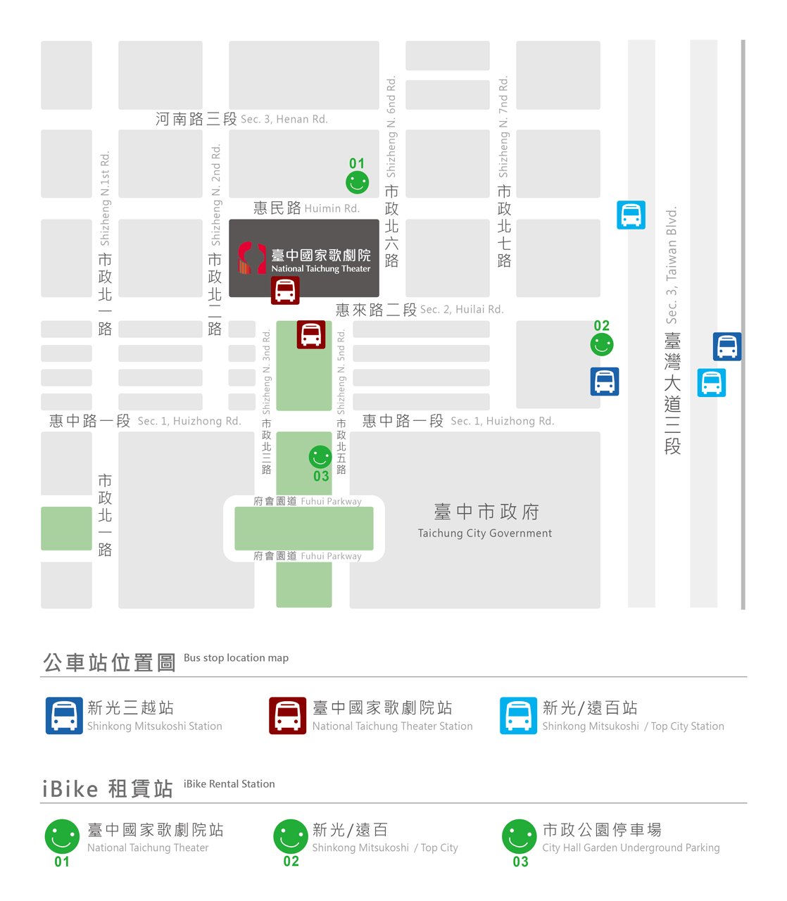

國家表演藝術中心 臺中國家歌劇院
臺中市西屯區惠來路二段 101 號
- 地圖資訊
- 大眾交通運輸
- 自行開車
大眾交通運輸
市區公車優化公車「新光 / 遠百」停靠站：
搭乘300、301、302、303、304、305、305E、305W、306、306E、306W、307、308，下車後沿惠來路往新光三越後方步行約5～10分鐘「新光三越」停靠站：
搭乘5、33、48、73、77、151、151(副)、152、153、153(副) 、153(區)、155、157、323、323區、324、325、326、359，下車後沿惠來路往新光三越後方步行約5～10分鐘「臺中國家歌劇院」停靠站：
60、69、69(繞)、75、75(區2)、358、658
iBike租賃點01：臺中國家歌劇院 (市政北六路 / 惠民路交叉口)
租賃點02：新光/遠百 (臺灣大道三段 / 惠來路二段交叉口，距離歌劇院約450公尺，步行約6分鐘)
租賃點03：市政公園停車場 (市政北五路 / 惠中路一段交叉口，距離歌劇院約400公尺，步行約5分鐘)
從【公路客運：朝馬站】至本場館搭乘公路客運（統聯、國光等）至「朝馬站」後，往市區方向步行約10～15分鐘；或至秋紅谷轉搭市區公車至「新光三越站」，沿惠來路往新光三越後方步行約5～10分鐘
從【高鐵臺中站】至本場館高鐵臺中站→「臺中國家歌劇院站」：於高鐵站6號出口11號月台搭乘和欣客運161號公車
欲從歌劇院前往高鐵站，請於歌劇院正門口站牌(無須過馬路)搭乘和欣客運161號公車高鐵臺中站→「朝馬轉運站」：搭乘和欣客運160號公車，往市區方向步行約10～15分鐘
高鐵臺中站→「新光三越站」：搭乘33、151、151(副)、153、 153(區) 及155，沿惠來路往新光三越後方步行約5～10分鐘
從【臺中火車站】至本場館臺中火車站→「新光三越站」：搭乘5、33、73、323、323區、324、325、326，並沿惠來路往新光三越後方步行約5～10分鐘
臺中火車站→「新光 / 遠百」：搭乘300、301、302、303、304、305、305E、305W、306、306E、306W、307、308，並沿惠來路往新光三越後方步行約5～10分鐘
從【臺中國際機場】至本場館臺中國際機場→「臺中國家歌劇院」：搭乘市區公車69
臺中國際機場→「新光 / 遠百」：搭乘302，並沿惠來路往新光三越後方步行約5～10分鐘
